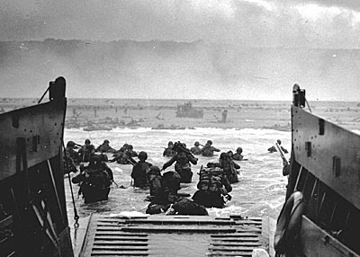
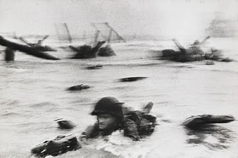
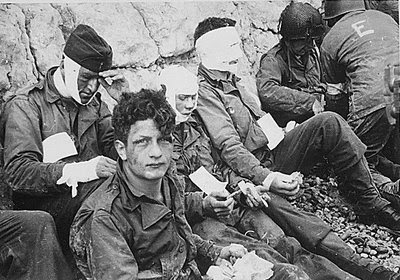
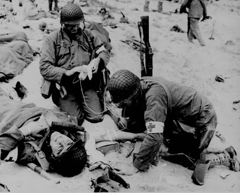
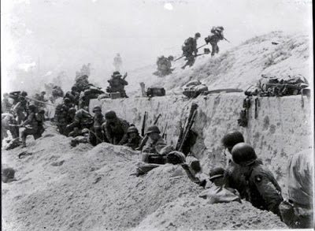
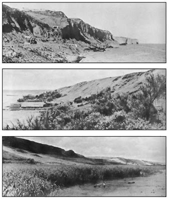

Thousands of Americans were spilled onto Omaha Beach. The high ground was won by a handful of men like Taylor who on that day burned with a flame bright beyond common understanding.
My thanks to Wretched Dog for forwarding this November 1960 article from the Atlantic magazine by BG S.L.A. Marshall.
Lest we forget.
Mike
III
Aerial view of Omaha Beach. Vierville draw is the one on the far left.

First Wave at Omaha Beach
UNLIKE what happens to other great battles, the passing of the years and the retelling of the story have softened the horror of Omaha Beach on D Day.
This fluke of history is doubly ironic since no other decisive battle has ever been so thoroughly reported for the official record. While the troops were still fighting in Normandy, what had happened to each unit in the landing had become known through the eyewitness testimony of all survivors. It was this research by the field historians which first determined where each company had hit the beach and by what route it had moved inland. Owing to the fact that every unit save one had been mislanded, it took this work to show the troops where they had fought.
How they fought and what they suffered were also determined in detail during the field research. As published today, the map data showing where the troops came ashore check exactly with the work done in the field; but the accompanying narrative describing their ordeal is a sanitized version of the original field notes.
This happened because the Army historians who wrote the first official book about Omaha Beach, basing it on the field notes, did a calculated job of sifting and weighting the material. So saying does not imply that their judgment was wrong. Normandy was an American victory; it was their duty to trace the twists and turns of fortune by which success was won. But to follow that rule slights the story of Omaha as an epic human tragedy which in the early hours bordered on total disaster. On this two-division front landing, only six rifle companies were relatively effective as units. They did better than others mainly because they had the luck to touch down on a less deadly section of the beach. Three times that number were shattered or foundered before they could start to fight. Several contributed not a man or bullet to the battle for the high ground. But their ordeal has gone unmarked because its detail was largely ignored by history in the first place. The worst-fated companies were overlooked, the more wretched personal experiences were toned down, and disproportionate attention was paid to the little element of courageous success in a situation which was largely characterized by tragic failure.
The official accounts which came later took their cue from this secondary source instead of searching the original documents. Even such an otherwise splendid and popular book on the great adventure as Cornelius Ryan's The Longest Day misses the essence of the Omaha story.
In everything that has been written about Omaha until now, there is less blood and iron than in the original field notes covering any battalion landing in the first wave. Doubt it? Then let's follow along with Able and Baker companies, 116th Infantry, 29th Division. Their story is lifted from my fading Normandy notebook, which covers the landing of every Omaha company.
ABLE Company riding the tide in seven Higgins boats is still five thousand yards from the beach when first taken under artillery fire. The shells fall short. At one thousand yards, Boat No. 5 is hit dead on and foundered. Six men drown before help arrives. Second Lieutenant Edward Gearing and twenty others paddle around until picked up by naval craft, thereby missing the fight at the shore line. It's their lucky day. The other six boats ride unscathed to within one hundred yards of the shore, where a shell into Boat No. 3 kills two men. Another dozen drown, taking to the water as the boat sinks. That leaves five boats.
Lieutenant Edward Tidrick in Boat No. 2 cries out: "My God, we're coming in at the right spot, but look at it! No shingle, no wall, no shell holes, no cover. Nothing!"
His men are at the sides of the boat, straining for a view of the target. They stare but say nothing. At exactly 6:36 A.M. ramps are dropped along the boat line and the men jump off in water anywhere from waist deep to higher than a man's head. This is the signal awaited by the Germans atop the bluff. Already pounded by mortars, the floundering line is instantly swept by crossing machine-gun fires from both ends of the beach.
Able Company has planned to wade ashore in three files from each boat, center file going first, then flank files peeling off to right and left. The first men out try to do it but are ripped apart before they can make five yards. Even the lightly wounded die by drowning, doomed by the waterlogging of their overloaded packs. From Boat No. 1, all hands jump off in water over their heads. Most of them are carried down. Ten or so survivors get around the boat and clutch at its sides in an attempt to stay afloat. The same thing happens to the section in Boat No. 4. Half of its people are lost to the fire or tide before anyone gets ashore. All order has vanished from Able Company before it has fired a shot.


Already the sea runs red. Even among some of the lightly wounded who jumped into shallow water the hits prove fatal. Knocked down by a bullet in the arm or weakened by fear and shock, they are unable to rise again and are drowned by the onrushing tide. Other wounded men drag themselves ashore and, on finding the sands, lie quiet from total exhaustion, only to be overtaken and killed by the water. A few move safely through the bullet swarm to the beach, then find that they cannot hold there. They return to the water to use it for body cover. Faces turned upward, so that their nostrils are out of water, they creep toward the land at the same rate as the tide. That is how most of the survivors make it. The less rugged or less clever seek the cover of enemy obstacles moored along the upper half of the beach and are knocked off by machine-gun fire.
Within seven minutes after the ramps drop, Able Company is inert and leaderless. At Boat No. 2, Lieutenant Tidrick takes a bullet through the throat as he jumps from the ramp into the water. He staggers onto the sand and flops down ten feet from Private First Class Leo J. Nash. Nash sees the blood spurting and hears the strangled words gasped by Tidrick: "Advance with the wire cutters!" It's futile; Nash has no cutters. To give the order, Tidrick has raised himself up on his hands and made himself a target for an instant. Nash, burrowing into the sand, sees machine gun bullets rip Tidrick from crown to pelvis. From the cliff above, the German gunners are shooting into the survivors as from a roof top.
Captain Taylor N. Fellers and Lieutenant Benjamin R. Kearfoot never make it. They had loaded with a section of thirty men in Boat No. 6 (Landing Craft, Assault, No. 1015). But exactly what happened to this boat and its human cargo was never to be known. No one saw the craft go down. How each man aboard it met death remains unreported. Half of the drowned bodies were later found along the beach. It is supposed that the others were claimed by the sea.
Along the beach, only one Able Company officer still lives -- Lieutenant Elijah Nance, who is hit in the heel as he quits the boat and hit in the belly by a second bullet as he makes the sand. By the end of ten minutes, every sergeant is either dead or wounded. To the eyes of such men as Private Howard I. Grosser and Private First Class Gilbert G. Murdock, this clean sweep suggests that the Germans on the high ground have spotted all leaders and concentrated fire their way. Among the men who are still moving in with the tide, rifles, packs, and helmets have already been cast away in the interests of survival.
To the right of where Tidrick's boat is drifting with the tide, its coxswain lying dead next to the shell-shattered wheel, the seventh craft, carrying a medical section with one officer and sixteen men, noses toward the beach. The ramp drops. In that instant, two machine guns concentrate their fire on the opening. Not a man is given time to jump. All aboard are cut down where they stand.
By the end of fifteen minutes, Able Company has still not fired a weapon. No orders are being given by anyone. No words are spoken. The few able-bodied survivors move or not as they see fit. Merely to stay alive is a full-time job. The fight has become a rescue operation in which nothing counts but the force of a strong example.
Above all others stands out the first-aid man, Thomas Breedin. Reaching the sands, he strips off pack, blouse, helmet, and boots. For a moment he stands there so that others on the strand will see him and get the same idea. Then he crawls into the water to pull in wounded men about to be overlapped by the tide. The deeper water is still spotted with tide walkers advancing at the same pace as the rising water. But now, owing to Breedin's example, the strongest among them become more conspicuous targets. Coming along, they pick up wounded comrades and float them to the shore raftwise. Machine-gun fire still rakes the water. Burst after burst spoils the rescue act, shooting the floating man from the hands of the walker or killing both together. But Breedin for this hour leads a charmed life and stays with his work indomitably.
By the end of one half hour, approximately two thirds of the company is forever gone. There is no precise casualty figure for that moment. There is for the Normandy landing as a whole no accurate figure for the first hour or first day. The circumstances precluded it. Whether more Able Company riflemen died from water than from fire is known only to heaven. All earthly evidence so indicates, but cannot prove it.
By the end of one hour, the survivors from the main body have crawled across the sand to the foot of the bluff, where there is a narrow sanctuary of defiladed space. There they lie all day, clean spent, unarmed, too shocked to feel hunger, incapable even of talking to one another. No one happens by to succor them, ask what has happened, provide water, or offer unwanted pity. D Day at Omaha afforded no time or space for such missions. Every landing company was overloaded by its own assault problems.
By the end of one hour and forty-five minutes, six survivors from the boat section on the extreme right shake loose and work their way to a shelf a few rods up the cliff. Four fall exhausted from the short climb and advance no farther. They stay there through the day, seeing no one else from the company. The other two, Privates Jake Shefer and Thomas Lovejoy, join a group from the Second Ranger Battalion, which is assaulting Pointe du Hoc to the right of the company sector, and fight on with the Rangers through the day. Two men. Two rifles. Except for these, Able Company's contribution to the D Day fire fight is a cipher.
BAKER Company which is scheduled to land twenty-six minutes after Able and right on top of it, supporting and reinforcing, has had its full load of trouble on the way in. So rough is the sea during the journey that the men have to bail furiously with their helmets to keep the six boats from swamping. Thus preoccupied, they do not see the disaster which is overtaking Able until they are almost atop it. Then, what their eyes behold is either so limited or so staggering to the senses that control withers, the assault wave begins to dissolve, and disunity induced by fear virtually cancels the mission. A great cloud of smoke and dust raised by the mortar and machine-gun fire has almost closed a curtain around Able Company's ordeal. Outside the pall, nothing is to be seen but a line of corpses adrift, a few heads bobbing in the water and the crimson-running tide. But this is enough for the British coxswains. They raise the cry: "We can't go in there. We can't see the landmarks. We must pull off."
In the command boat, Captain Ettore V. Zappacosta pulls a Colt .45 and says: "By God, you'll take this boat straight in." His display of courage wins obedience, but it's still a fool's order. Such of Baker's boats as try to go straight in suffer Able's fate without helping the other company whatever. Thrice during the approach mortar shells break right next to Zappacosta's boat but by an irony leave it unscathed, thereby sparing the riders a few more moments of life. At seventy-five yards from the sand Zappacosta yells: "Drop the ramp !" The end goes down, and a storm of bullet fire comes in.
Zappacosta jumps first from the boat, reels ten yards through the elbow-high tide, and yells back: "I'm hit." He staggers on a few more steps. The aid man, Thomas Kenser, sees him bleeding from hip and shoulder. Kenser yells: "Try to make it in; I'm coming." But the captain falls face forward into the wave, and the weight of his equipment and soaked pack pin him to the bottom. Kenser jumps toward him and is shot dead while in the air. Lieutenant Tom Dallas of Charley Company, who has come along to make a reconnaissance, is the third man. He makes it to the edge of the sand. There a machine-gun burst blows his head apart before he can flatten.
Private First Class Robert L. Sales, who is lugging Zappacosta's radio (an SCR 300), is the fourth man to leave the boat, having waited long enough to see the others die. His boot heel catches on the edge of the ramp and he falls sprawling into the tide, losing the radio but saving his life. Every man who tries to follow him is either killed or wounded before reaching dry land. Sales alone gets to the beach unhit. To travel those few yards takes him two hours. First he crouches in the water, and waddling forward on his haunches just a few paces, collides with a floating log -- driftwood. In that moment, a mortar shell explodes just above his head, knocking him groggy. He hugs the log to keep from going down, and somehow the effort seems to clear his head a little. Next thing he knows, one of Able Company's tide walkers hoists him aboard the log and, using his sheath knife, cuts away Sales's pack, boots, and assault jacket.
Feeling stronger, Sales returns to the water, and from behind the log, using it as cover, pushes toward the sand. Private Mack L. Smith of Baker Company, hit three times through the face, joins him there. An Able Company rifleman named Kemper, hit thrice in the right leg, also comes alongside. Together they follow the log until at last they roll it to the farthest reach of high tide. Then they flatten themselves behind it, staying there for hours after the flow has turned to ebb. The dead of both companies wash up to where they lie, and then wash back out to sea again. As a body drifts in close to them, Sales and companions, disregarding the fire, crawl from behind the log to take a look. If any one of them recognizes the face of a comrade, they join in dragging the body up onto the dry sand beyond the water's reach. The unfamiliar dead are left to the sea. So long as the tide is full, they stay with this unique task. Later, an unidentified first-aid man who comes wiggling along the beach dresses the wounds of Smith. Sales, as he finds strength, bandages Kemper. The three remain behind the log until night falls. There is nothing else to be reported of any member of Zappacosta's boat team.
Only one other Baker Company boat tries to come straight in to the beach. Somehow the boat founders. Somehow all of its people are killed -- one British coxswain and about thirty American infantrymen. Where they fall, there is no one to take note of and report.


The LuckyFRIGHTENED coxswains in the other four craft take one quick look, instinctively draw back, and then veer right and left away from the Able Company shambles. So doing, they dodge their duty while giving a break to their passengers. Such is the shock to the boat team leaders, and such their feeling of relief at the turning movement, that not one utters a protest. Lieutenant Leo A. Pingenot's coxswain swings the boat far rightward toward Pointe du Hoc; then, spying a small and deceptively peaceful-looking cove, heads directly for the land. Fifty yards out, Pingenot yells: "Drop the ramp!" The coxswain freezes on the rope, refusing to lower. Staff Sergeant Odell L. Padgett jumps him, throttles him, and bears him to the floor. Padgett's men lower the rope and jump for the water. In two minutes, they are all in up to their necks and struggling to avoid drowning. That quickly, Pingenot is already far out ahead of them. Padgett comes even with him, and together they cross onto dry land. The beach of the cove is heavily strewn with giant boulders. Bullets seem to be pinging off every rock.


Pingenot and Padgett dive behind the same rock. Then they glance back, but to their horror see not one person. Quite suddenly smoke has half blanked out the scene beyond the water's edge. Pingenot moans: "My God, the whole boat team is dead." Padgett sings out: "Hey, are you hit?" Back come many voices from beyond the smoke. "What's the rush?" "Take it easy!" "We'll get there." "Where's the fire?" "Who wants to know?" The men are still moving along, using the water as cover. Padgett's yell is their first information that anyone else has moved up front. They all make it to the shore, and they are twenty-eight strong at first. Pingenot and Padgett manage to stay ahead of them, coaxing and encouraging. Padgett keeps yelling: "Come on, goddam it, things are better up here!" But still they lose two men killed and three wounded in crossing the beach.
In the cove, the platoon latches on to a company of Rangers, fights all day as part of that company, and helps destroy the enemy entrenchments atop Pointe du Hoc. By sundown that mop-up is completed. The platoon bivouacs at the first hedgerow beyond the cliff.
The other Baker Company boat, which turns to the right, has far less luck. Staff Sergeant Robert M. Campbell, who leads the section, is the first man to jump out when the ramp goes down. He drops in drowning water, and his load of two bangalore torpedoes takes him straight to the bottom. So he jettisons the bangalores and then, surfacing, cuts away all equipment for good measure. Machine-gun fire brackets him, and he submerges again briefly. Never a strong swimmer, he heads back out to sea. For two hours he paddles around, two hundred or so yards from the shore. Though he hears and sees nothing of the battle, he somehow gets the impression that the invasion has failed and that all other Americans are dead, wounded, or have been taken prisoner. Strength fast going, in despair he moves ashore rather than drown. Beyond the smoke he quickly finds the fire. So he grabs a helmet from a dead man's head, crawls on hands and knees to the sea wall, and there finds five of his men, two of them unwounded.

Like Campbell, Private First Class Jan J. Budziszewski is carried to the bottom by his load of two bangalores. He hugs them half a minute before realizing that he will either let loose or drown. Next, he shucks off his helmet and pack and drops his rifle. Then he surfaces. After swimming two hundred yards, he sees that he is moving in exactly the wrong direction. So he turns about and heads for the beach, where he crawls ashore "under a rain of bullets." In his path lies a dead Ranger. Budziszewski takes the dead man's helmet, rifle, and canteen and crawls on to the sea wall. The only survivor from Campbell's boat section to get off the beach, he spends his day walking to and fro along the foot of the bluff, looking for a friendly face. But he meets only strangers, and none shows any interest in him.
IN Lieutenant William B. Williams' boat, the coxswain steers sharp left and away from Zappacosta's sector. Not seeing the captain die, Williams doesn't know that command has now passed to him. Guiding on his own instinct, the coxswain moves along the coast six hundred yards, then puts the boat straight in. It's a good guess; he has found a little vacuum in the battle. The ramp drops on dry sand and the boat team jumps ashore. Yet it's a close thing. Mortar fire has dogged them all the way; and as the last rifleman clears the ramp, one shell lands dead center of the boat, blows it apart, and kills the coxswain. Momentarily, the beach is free of fire, but the men cannot cross it at a bound. Weak from seasickness and fear, they move at a crawl, dragging their equipment. By the end of twenty minutes, Williams and ten men are over the sand and resting in the lee of the sea wall. Five others are hit by machine-gun fire crossing the beach; six men, last seen while taking cover in a tidal pocket, are never heard from again. More mortar fire lands around the party as Williams leads it across the road beyond the sea wall. The men scatter. When the shelling lifts, three of them do not return. Williams leads the seven survivors up a trail toward the fortified village of Les Moulins atop the bluff. He recognizes the ground and knows that he is taking on a tough target. Les Moulins is perched above a draw, up which winds a dirt road from the beach, designated on the invasion maps as Exit No. 3.
Williams and his crew of seven are the first Americans to approach it D Day morning. Machine-gun fire from a concrete pillbox sweeps over them as they near the brow of the hill, moving now at a crawl through thick grass. Williams says to the others: "Stay here; we're too big a target!" They hug earth, and he crawls forward alone, moving via a shallow gully. Without being detected, he gets to within twenty yards of the gun, obliquely downslope from it. He heaves a grenade; but he has held it just a bit too long and it explodes in air, just outside the embrasure. His second grenade hits the concrete wall and bounces right back on him. Three of its slugs hit him in the shoulders. Then, from out of the pillbox, a German potato masher sails down on him and explodes just a few feet away; five more fragments cut into him. He starts crawling back to his men; en route, three bullets from the machine gun rip his rump and right leg.
The seven are still there. Williams hands his map and compass to Staff Sergeant Frank M. Price, saying: "It's your job now. But go the other way -- toward Vierville." Price starts to look at Williams' wounds, but Williams shakes him off, saying: "No, get moving." He then settles himself in a hole in the embankment, stays there all day, and at last gets medical attention just before midnight.


On leaving Williams, Price's first act is to hand map and compass (the symbols of leadership) to Technical Sergeant William Pearce, whose seniority the lieutenant has overlooked. They cross the draw, one man at a time, and some distance beyond come to a ravine; on the far side, they bump their first hedgerow, and as they look for an entrance, fire comes against them. Behind a second hedgerow, not more than thirty yards away, are seven Germans, five rides and two burp guns. On exactly even terms, these two forces engage for the better part of an hour, apparently with no one's getting hit. Then Pearce settles the fight by crawling along a drainage ditch to the enemy flank. He kills the seven Germans with a Browning Automatic Rifle.
For Pearce and his friends, it is a first taste of battle; its success is giddying. Heads up, they walk along the road straight into Vierville, disregarding all precautions. They get away with it only because that village is already firmly in the hands of Lieutenant Walter Taylor of Baker Company and twenty men from his boat team.


TERRAIN ON OMAHA BEACH. Bluffs west of Vierville Draw (top). In distance is Pointe et Raz de la Percée. Concrete casemate in bluff is sited to cover beach. Hamel au Prêtre (center) as seen from Vierville Draw. Les Moulins area (bottom) as seen from the east.
Taylor is a luminous figure in the story of D Day, one of the forty-seven immortals of Omaha who, by their dauntless initiative at widely separated points along the beach, saved the landing from total stagnation and disaster. Courage and luck are his in extraordinary measure.
When Baker Company's assault wave breaks up just short of the surf where Able Company is in ordeal, Taylor's coxswain swings his boat sharp left, then heads toward the shore about halfway between Zappacosta's boat and Williams'. Until a few seconds after the ramp drops, this bit of beach next to the village called Hamel-au-Prêtre is blessedly clear of fire. No mortar shells crown the start. Taylor leads his section crawling across the beach and over the sea wall, losing four men killed and two wounded (machine-gun fire) in this brief movement. Some yards off to his right, Taylor has seen Lieutenants Harold Donaldson and Emil Winkler shot dead. But there is no halt for reflection; Taylor leads the section by trail straight up the bluff and into Vierville, where his luck continues. In a two-hour fight he whips a German platoon without losing a man.
The village is quiet when Pearce joins him. Pearce says: "Williams is shot up back there and can't move."
Says Taylor: "I guess that makes me company commander."
Answers Pearce: "This is probably all of Baker Company." Pearce takes a head count; they number twenty-eight, including Taylor.
Says Taylor: "That ought to be enough. Follow me!"
A SMALL hedgerow.

Inland from Vierville about five hundred yards lies the Château de Vaumicel, imposing in its rock-walled massiveness, its hedgerow-bordered fields all entrenched and interconnected with artilleryproof tunnels. To every man but Taylor the target looks prohibitive. Still, they follow him. Fire stops them one hundred yards short of the château. The Germans are behind a hedgerow at mid-distance. Still feeling their way, Taylor's men flatten, open fire with rifles, and toss a few grenades, though the distance seems too great. By sheer chance, one grenade glances off the helmet of a German squatting in a foxhole. He jumps up, shouting: "Kamerad! Kamerad!" Thereupon twenty-four of the enemy walk from behind the hedgerow with their hands in the air. Taylor pares off one of his riflemen to march the prisoners back to the beach. The brief fight costs him three wounded. Within the château, he takes two more prisoners, a German doctor and his first-aid man. Taylor puts them on a "kind of a parole," leaving his three wounded in their keeping while moving his platoon to the first crossroads beyond the château.
The Chateau.

Here he is stopped by the sudden arrival of three truckloads of German infantry, who deploy into the fields on both flanks of his position and start an envelopment. The manpower odds, about three to one against him, are too heavy. In the first trade of fire, lasting not more than two minutes, a rifleman lying beside Taylor is killed, three others are wounded, and the B.A.R. is shot from Pearce's hands. That leaves but twenty men and no automatic weapons.
Taylor yells: "Back to the château!" They go out, crawling as far as the first hedgerow; then they rise and trot along, supporting their wounded. Taylor is the last man out, having stayed behind to cover the withdrawal with his carbine until the hedgerows interdict fire against the others. So far, this small group has had no contact with any other part of the expedition, and for all its members know, the invasion may have failed.

They make it to the château. The enemy comes on and moves in close. The attacking fire builds up. But the stone walls are fire-slotted, and through the midday and early afternoon these ports well serve the American riflemen. The question is whether the ammunition will outlast the Germans. It is answered at sundown, just as the supply runs out, by the arrival of fifteen Rangers who join their fire with Taylor's, and the Germans fade back.
Already Taylor and his force are farther south than any element of the right flank in the Omaha expedition. But Taylor isn't satisfied. The battalion objective, as specified for the close of D Day, is still more than one half mile to the westward. He says to the others: "We've got to make it."
So he leads them forth, once again serving as first scout, eighteen of his own riflemen and fifteen Rangers following in column. One man is killed by a bullet getting away from Vaumicel. Dark closes over them. They prepare to bivouac. Having got almost to the village of Louvieres, they are by this time almost one half mile in front of anything else in the United States Army. There a runner reaches them with the message that the remnants of the battalion are assembling seven hundred yards closer to the sea; Taylor and party are directed to fall back on them. It is done.
Later, still under the spell, Price paid the perfect tribute to Taylor. He said: "We saw no sign of fear in him. Watching him made men of us. Marching or fighting, he was leading. We followed him because there was nothing else to do."
Thousands of Americans were spilled onto Omaha Beach. The high ground was won by a handful of men like Taylor who on that day burned with a flame bright beyond common understanding.
The URL for this page is http://www.theatlantic.com/doc/196011/omaha
15 comments:
"In the command boat, Captain Ettore V. Zappacosta pulls a Colt .45 and says: "By God, you'll take this boat straight in.""
The 1911: an early American innovation on the slavedriver's whip; now obsoleted by the taser. These GIs are chattel slaves. They do not fight because they have decided to, promised to, or been hired to; they fight because otherwise they will be killed by their "own" "elected" "leadership". All three words are lies.
To all those outraged because I peeing on their religious worship of compulsion, war, majority rule, might makes right, the State, and American exceptionalism: you've earned it.
Folks,
I allowed the comment above to pass because I wanted you to see what passes for anarchist thought these days.
Such analysis is self-discrediting.
Mike
III
Nonsense Mike.
I grew up around WWII vets and looked up to them. They were all admirable men.
That does not change the fact that WWII can be looked at in a much broader context in which Americans can say, "What did that war give us?"
After it was all said and done America then turned it's back on Eastern Europe and let the Russians enslave millions of people that we supposedly fought to free from the NAZIs.
And the soldiers men of WWII were largely conscripted. Say what you will but you can not be free if the state owns you and can send you off to foreign wars.
Hopefully that is settled as we see that a volunteer military is much more effective than a conscripted one.
We fight for our brothers the rest is all bullshit anyway.
Cory
Well, Anon, you just go right ahead and pee. I wonder, though, do you have the courage for some face time? I do. Let's talk, brother. Nothing to fear. Just a little, talk.
Anon,
Don't listen to Sean. He'd be boring conversation. Instead, please contact me so we can have a much more enlightened and engaging exchange of sentiments and perspectives.
You can email Mike with your contact info and he will pass it on to me.
High Plains Lawyer
If a person can't persuade another, oftentimes he turns to violence to maintain his dominance after his last argument is rejected. True on the individual level with dueling, true on the large group level with constitutional coercion. Defensive force is a win-lose response, and I'd rather try to talk my fellow man out of being a brute as long as the opportunity is available.
Having just lauded conscription for a huge foreign war of questionable defensive purpose, we come back to the 'if elected, what foreign policy will the Sipsey Street administration pursue' question. This then begs the question of, why should anyone want to delegate resources to enable anybody to pursue a foreign policy?
Anon said:
"If a person can't persuade another, oftentimes he turns to violence to maintain his dominance after his last argument is rejected. True on the individual level with dueling, true on the large group level with constitutional coercion."
And if a person just has no clue how to engage other men in conversation, find common ground, and then persuade them, if he is a total failure at that, he instead just jumps right past the persuasion part and goes straight to insults that would get his ass kicked if in person.
You are like some guy at an office party who just walks in out of the blue, walks up to a group of people who are engaged in a conversation and, without introduction or engaging folks in the current conversation, he just blurts out something offensive, such as "but all of you are simply stupid, foolish wage slaves to capitalism" or some such.
"I'd rather try to talk my fellow man out of being a brute as long as the opportunity is available."
Well, if that's your motive, then you are a spectacular failure at persuasion, since you sound as if your goal was simply to insult, by saying things I suspect you would not have the cojones to say to any of these men face to face - which is why you got the reaction you did.
And my point, and that of Sean, I suspect, is that even you know you are doing here on the internet what you would not do in person. Chalk it up to whatever you want. Perhaps it is simply because you know your behavior is rude, and you have some level of decency that would keep you from doing that in the real world? I hope that's it, rather than a lack of courage.
If you really want to actually change people's minds, a first step would be to not act like a snooty asshole know it all. Try that next time. But then maybe you just don't know how to persuade, but only know how to insult.
If you are going to do that, then have the personal courage to do it in person. Be consistent.
High Plains Lawyer
Ok, I was up for about 33 hours, then slept 5 and have been up now for 20 hours. I am ready to lie down again.
I haven't read this entire article I will when I get up in three or four hours. I just wanted to say I knew men who hit that beach. I met Col. James Rudder (Pont Du Hoc) Rangers? And in the presence of these men are the very few times in my life I have felt inadequate. But so very grateful to have known these men.
Gotta lie down now. This dying crap isn't good for peaceful sleep, but I'm doing the dying part real slow, so I guess I don't have a legitimate bitch.
Damn Anonymous, couldn't you be more inventive?
Cowardice disguised and moral superiority has been done to death. It is trite. Please try to do better.
Now, Sean, I scared someone nearly to death by suggesting we "talk". Be careful you scare anonymous into dirty underwear.
BTW, I am going to try to call you later today and see if we can have coffee when I pass through your hometown. For now, good night.
My approach might be cowardly; I consider it better than picking a face-to-face fight, that kind of politics is the bully's way. I see the most principled Restorationists as similar to church ladies collecting votes for alcohol prohibition. Or eco-nuts collecting votes to shut down suburban expansion because they find it so ugly it damages society. And I see the less principled Restorationists on a range between thieves who want to continue leeching taxes, to sociopaths. All these motivations are clearly wrong in some way. I am the victim being damaged, and I do not have to apologize to those hurting me. Yet only the sociopaths have consciously set out to be Evil, and the rest of the folks are friends and neighbors. What reaction is proportional? What I've decided to do is pick at the consciences of the well-meaning politicians from a safe distance, as many often see the errors of their ways.
Mike, Thanks for this article. The horror of that day numbs my mind.
Unreal carnage. What courage it must have taken. I still have a hard time with the fact that the pre invasion bombing was pathetically off target.....Well,the surprise is gone, so why not continue with MANY,MANY,MANY MORE bombing runs?
Mainly disturbing is watching our soldiers run across 300 yards of beach completely exposed. It does not take much thought to have the front few men on the amphibious vehicles holding a bullet proof shield in front of them. 2 guys hold the weight,and 4 or 5 can cross the beach crouching behind the shield.....I mean come on, the Greek Phalanx was invented over 2000 years ago...
If it took 3 men to carry the heavy shield,so what,....that would be 7 or 8 at least getting across " dead mans land"
Cool blog as for me. It would be great to read something more concerning this topic. Thank you for posting that information.
Sexy Lady
Female escorts
Cool post as for me.
I'd like to read something more about that matter.
Thanks for giving that info.
With best regards Margo!
Please note that in this historical account the "château du Vaumicel" was mistaken for the "manor of l'Ormel", due to a designation error on the US war maps. The beroic inroad and fight led by Lt. Taylor actually took place in l'Ormel - and not in the Vaumicel, which stands about 300 meters West of L'Ormel. This error was then corrected in the French translation, which can be found on the Vierville.free.fr website.
N.BULTE (owner of L'Ormel)
Post a Comment